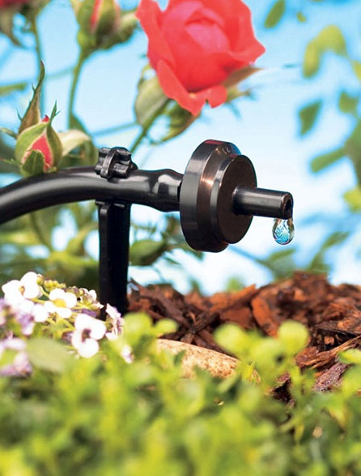

Sistema de riego.



El sistema de riego consta de una serie de componentes este dependerá de si se trata por aspersión, o por goteo ; la utilización de este sistema es diferente en cada caso, al contar con un sistema de riego se asegura la vida y riego de las plantas de manera continua y un ahorro en e l tiempo y la mano de obra.